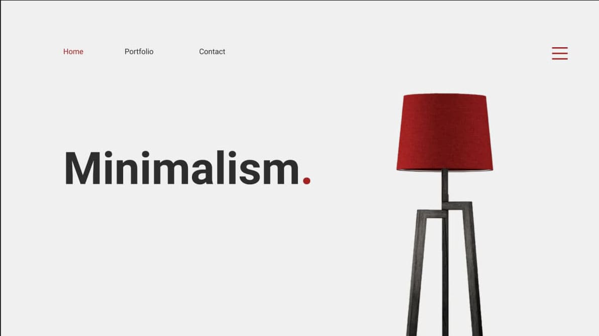
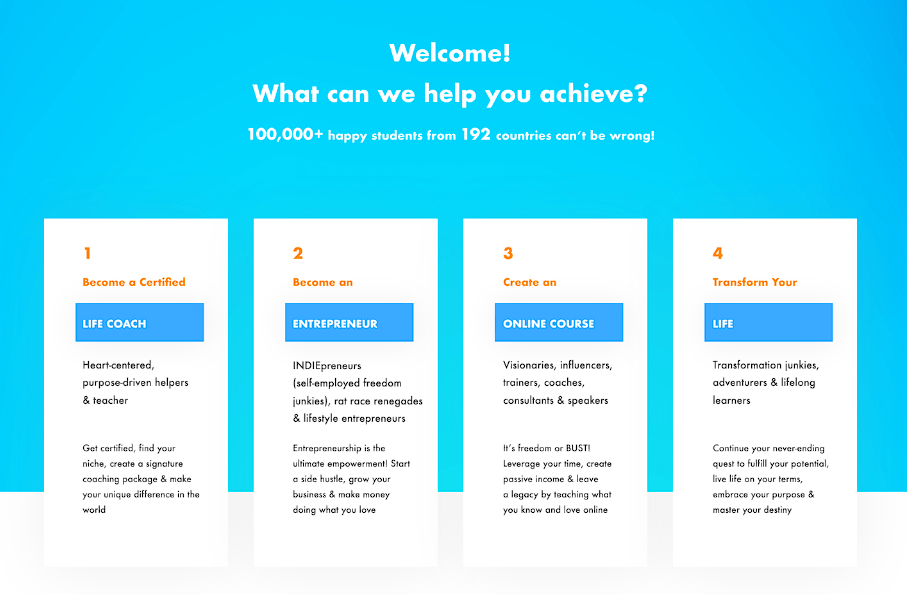
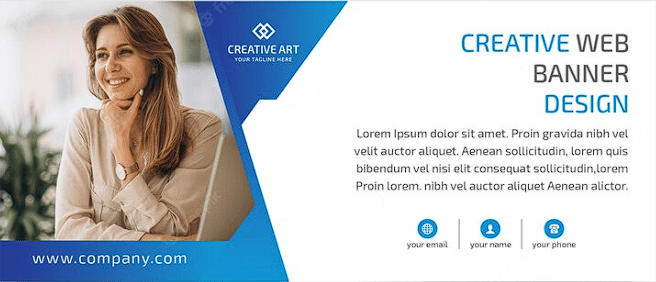
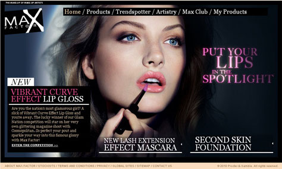
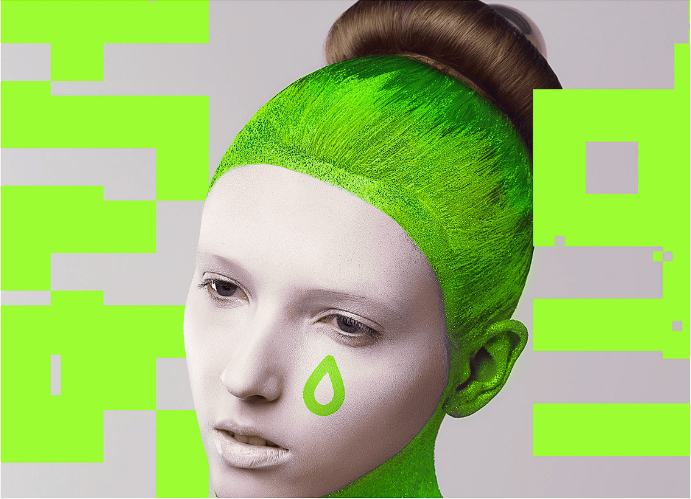
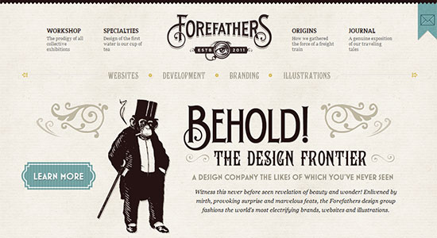
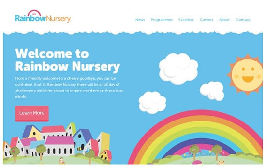
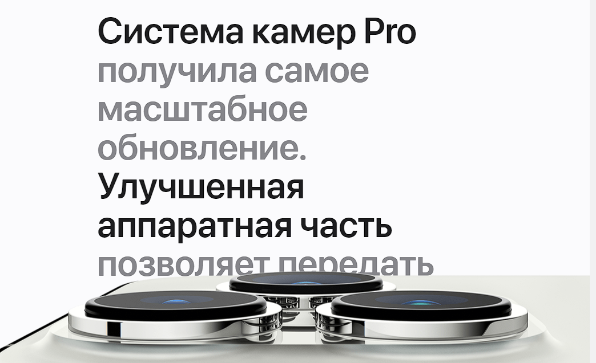
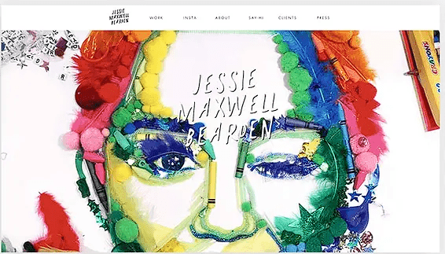

Концепция
Поиск готовых концепций и референсов
99% дизайна уже есть в готовой реализации, не изобретайте велосипед!
- behance.net
- pinterest.ru
- dribbble.com
- deviantart.com (нужен VPN)
- siteinspire.com
- onepagelove.com
- cssdesignawards.com
- awwwards.com
- medium.muz
Для дизайн-концепции нужно выбрать какое-нибудь ПРИЛАГАТЕЛЬНОЕ, чтобы распростанить это качество на всем дизайне (простой, строгий, яркий, гламурный, модный, молодежный, стильный, старинный, технологичный, футуристический, вызывающий и т.д.)
Некоторые в�иды концепций
МИНИМАЛИЗМ

- Ничего лишнего, пространство, свет, свобода
- Минимум иллюстраций или вовсе без них
- Минимум текста
- Минимум цвета, монохромность
- Часто в светлых тонах, белый фон
- "Дизайн без дизайна" (когда дизайн особо не должен отвлекать)
ПЛОСКИЙ
Flat design (разновидность минимализма).

- Дизайн для админок, документации, блогов, приложений
- Упрощенный (анти-скевоморфизм)
- Легко кастомизируется, можно примешивать черты других концепций
- Начало: 2010, тренд с времен появления Windows 10
- 2014 - Google Material Design (плоский дизайн взяли за основу + как будто на чистый листок бумаги наслаиваются другие и отбрасывают тень)
- CSS-феймворки
- getbootstrap.com - Bootstrap
- materializecss.com - Materializecss
- bulma.io - Bulma
БИЗНЕС

- Представительный, копоративный, старт-апы
- Выдерженный стиль в строгих лаконичных цветах
- Корпоративные цвета и строгое соблюдение цветовой схемы
- Единообразие стиля, повторяемость, узнаваемость
- Хорошо читабельная типографика
- Акцент на контенте
- Модульные сетки
- Много текста
- Светлые тона, светлый фон, часто для акцентов - холодные цвета
- Соблюдение правил типографики
- Новостные
ГЛАМУР

- Бьюти
- Много красивых и ярких иллюстраций, акцент на них, на товаре, услуге
- Журнальный, женский стиль (должен вызвать ассоциации как при пролистывании журнала)
- Большие заголовки, чёрный фон имеет место быть, полосы
- Шик, лоск, шоппинг, эветны
- Салоны красоты, женская одежда, кино, театры, путешествия, парикмахерские, парфюм, косметика, фитнес, промо-сайты, цветы и т.д.
КИСЛОТНЫЙ

- Преобладают резкие, яркие, смелые и токсичные насыщенные цвета, градиенты, декоративные элементы (волны, линии и т.д.)
- Подходит для чего-то супернового и модного (реклама электронного товара или гаджета, спорт, кроссовки, музыка, концептуальный эвент)
- Супер-привлечение внимания
- Для молодой и продвинутой ЦА
- Электрический и жидкостный дизайн
- Яркие цвета аля "вырви глаз", кибер-панк
РЕТРО

- Часто в монохроме или сепии (минимум цвета), винтаж
- Старые газеты, журналы, афиши
- Барбершопы, рестораны, маг. антиквариата, книжные, канцелярские, юрид. услуги, алкоголь и т.д.
ДЕТСКИЙ

- Мультяшный
- Игровой
- Детские сайты (игровые комнаты, дет. стоматологии, развивашки, дет. парикмахерские и т.д.)
КРЕАТИВ

- WOW-эффекты (анимации, видео, звук, интерактивность и пр.)
- Сложный и долгоразрабатываемый
АРТ

- Большое количество самописных иллюстраций
- Художественные навыки и умение рисовать
- Кастомный и эксклюзивный концепт
- Академичность
УСТАРЕВШИЕ КОНЦЕПТЫ
- Web 2.0, "карамельный" веб-дизайн
- 1999 - 2009, становление веб-дизайна, Windows XP, яркие тона, закругленные углы, объемные иконки
- Скевоморфизм, реализм
- начало: 2009, разработана Apple, iOS того времени, весь интерфейс пиближен к реальному, как-будто из натуральных материалов (метал, пластик, дерево, кожа и т.д.), объём, тени, градиент, блики, сложная разработка
- Fluent-design (начало: 2017, разработана Microsoft)
Возможно некоторое сочетание различных концепций, но лучше придерживатся одной стилистики
Тренды с начала 2019-го года
- Иллюстрации (яркие, большие, мультяшные, абстрактные)
- Кислотные цвета (яркие, смелые цвета)
- Асимметричность (нестандартная сетка, важно не переборщить)
- Электрический дизайн (свечение, диоды, лазер, цветные тени, контраст света на тёмном фоне)
- Градиенты
- Живые фотографии (нестоковые, уникальные, неособо постановочные)
- Жидкие формы (цветные волны, застывшая жидкость)
- Видеофон на главном экране
- Огромные заголовки без иллюсраций
- Минимализм